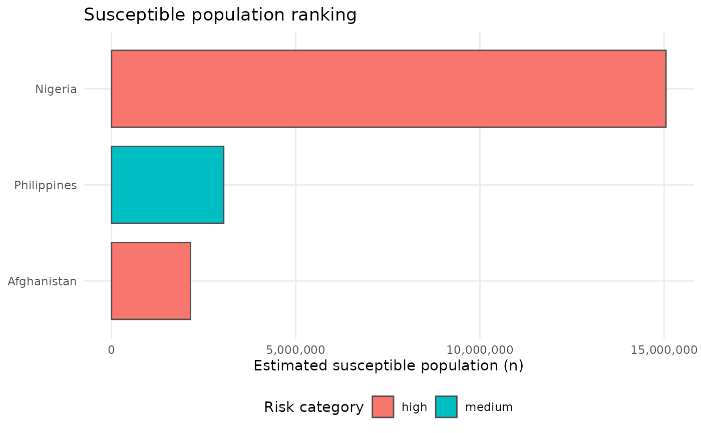

This vignette demonstrates the data access layer.
For reproducibility and fast vignette builds, we use shipped example data and pinned fixtures.
The core public helpers are:
-
gho_find_indicator(): search the WHO GHO indicator catalogue -
get_coverage(): download and standardise a coverage series (returnsiso3,year,coverage) -
get_cases(): download and standardise a cases series (returnsiso3,year,cases)
The returned iso3 values are standardised to ISO3 codes
and year is an integer year.
library(vpdsus)
panel <- vpdsus_example_panel()
head(panel)
#> # A tibble: 6 × 10
#> iso3 country who_region year coverage cases pop_total pop_0_4 pop_5_14
#> <chr> <chr> <chr> <int> <dbl> <int> <int> <int> <int>
#> 1 AFG Afghanistan EMR 2018 0.66 2400 37170000 6300000 11200000
#> 2 AFG Afghanistan EMR 2019 0.68 3100 38040000 6400000 11300000
#> 3 AFG Afghanistan EMR 2020 0.67 4200 38930000 6500000 11400000
#> 4 NGA Nigeria AFR 2018 0.54 9800 195900000 33000000 61000000
#> 5 NGA Nigeria AFR 2019 0.56 12000 200900000 34000000 62000000
#> 6 NGA Nigeria AFR 2020 0.57 8800 206100000 35000000 63000000
#> # ℹ 1 more variable: births <int>Caching
Live downloads are cached as JSON under the user cache directory. You can inspect the cache location and size:
vpdsus_cache_info()
#> # A tibble: 1 × 3
#> cache_dir n_files bytes
#> <chr> <int> <dbl>
#> 1 /home/runner/.cache/R/vpdsus 0 0Indicator discovery (deterministic example)
The WHO GHO API exposes an indicator catalogue. Use
gho_find_indicator() to search for the code you need, then
pass that code into get_coverage() or
get_cases().
This vignette uses a pinned fixture so it can run deterministically in CI:
# Search the WHO GHO indicator metadata (offline fixture for this vignette)
m <- gho_find_indicator("measles", top_n = 10, offline = TRUE)
print(m)
#> # A tibble: 6 × 2
#> indicator_code indicator_name
#> <chr> <chr>
#> 1 MCV2 Measles-containing-vaccine second-dose (MCV2) immunization cov…
#> 2 mslv Measles immunization coverage among one-year-olds (%)
#> 3 vmsl Measles immunization coverage among one-year-olds (%)
#> 4 WHS2_168 Distribution of causes of death among children aged <5 years (…
#> 5 WHS3_62 Measles - number of reported cases
#> 6 WHS8_110 Measles-containing-vaccine first-dose (MCV1) immunization cove…
# Two useful measles-related indicators in this list are:
# - WHS8_110: MCV1 coverage
# - WHS3_62: reported measles casesCoverage + cases (fixture-based examples)
To keep this vignette deterministic, we use pinned single-country fixtures for:
- MCV1 coverage (USA, 2020) via indicator code
WHS8_110 - measles cases (USA, 2020) via indicator code
WHS3_62
The corresponding live calls would be:
get_coverage("MCV1")
get_cases("measles")Here we read the pinned raw JSON and standardise it to the package output columns.
# Coverage fixture
p_cov <- system.file("extdata", "fixtures", "gho_WHS8_110_USA_2020.json", package = "vpdsus")
txt_cov <- paste(readLines(p_cov, warn = FALSE, encoding = "UTF-8"), collapse = "\n")
raw_cov <- jsonlite::fromJSON(txt_cov)$value
cov <- tibble::as_tibble(raw_cov) |>
dplyr::transmute(
iso3 = toupper(trimws(as.character(.data$SpatialDim))),
year = as.integer(.data$TimeDim),
coverage = as.numeric(.data$Value) / 100
)
cov
#> # A tibble: 1 × 3
#> iso3 year coverage
#> <chr> <int> <dbl>
#> 1 USA 2020 0.91
# Cases fixture
p_cases <- system.file("extdata", "fixtures", "gho_WHS3_62_USA_2020.json", package = "vpdsus")
txt_cases <- paste(readLines(p_cases, warn = FALSE, encoding = "UTF-8"), collapse = "\n")
raw_cases <- jsonlite::fromJSON(txt_cases)$value
cases <- tibble::as_tibble(raw_cases) |>
dplyr::transmute(
iso3 = toupper(trimws(as.character(.data$SpatialDim))),
year = as.integer(.data$TimeDim),
cases = as.numeric(.data$Value)
)
cases
#> # A tibble: 1 × 3
#> iso3 year cases
#> <chr> <int> <dbl>
#> 1 USA 2020 1275Where to go next (end-to-end workflow)
The functions above focus on data retrieval and standardisation. A typical end-to-end analysis then:
- builds a modelling-ready panel (coverage + cases + demography),
- estimates susceptibility, and
- produces a WHO-style risk ranking (and optionally fits outbreak models).
This repository ships vpdsus_example_panel() so the
workflow can be demonstrated deterministically without live
downloads:
panel <- vpdsus_example_panel()
# 1) Susceptibility estimation (simple static method)
sus <- estimate_susceptible_static(panel, coverage_col = "coverage", pop_col = "pop_0_4")
# 2) Risk ranking (summarise recent coverage and take susceptibility at a year)
r <- risk_rank(panel, sus, window_years = 3, year_end = 2020)
# 3) Inspect / plot
head(r)
#> # A tibble: 3 × 9
#> iso3 coverage_mean who_region country susceptible_n susceptible_prop method
#> <chr> <dbl> <chr> <chr> <dbl> <dbl> <chr>
#> 1 NGA 0.557 AFR Nigeria 15050000 0.43 static
#> 2 PHL 0.73 WPR Philippi… 3045000 0.29 static
#> 3 AFG 0.67 EMR Afghanis… 2145000 0.33 static
#> # ℹ 2 more variables: risk_category <fct>, rank_global <int>
plot_coverage_rank(r, top_n = 5)
plot_susceptible_rank(r, top_n = 5)
See the other vignettes for method choices and modelling:
- Susceptibility estimates and WHO-style ranking plots
- Outbreak models